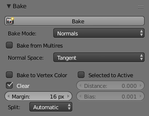

渲染烘焙¶
参考
- 面板
一般来说，烘焙是预先计算某些东西的行为，以便在以后的流程加速某些其他过程。从头开始渲染需要花费大量时间，具体取决于你的选项。因此，对于选择的物体，Blender允许你提前“烘焙”渲染的某些部分。然后，当你渲染时，使整个场景渲染得更快，因为不必重新计算这些物体的颜色。
渲染烘焙创建网格物体渲染表面的2D位图图像。可以使用物体的UV坐标将这些图像重新映射到物体上。烘焙是针对每个单独的网格进行的，并且只有在该网格已经UV展开的情况下才能进行烘焙。虽然设置和执行需要时间，但它可以节省渲染时间。如果要渲染长动画，则烘焙所花费的时间可能远远少于渲染长动画的每帧所花费的时间。
在强光/阴影解决方案中使用渲染烘焙，例如AO或来自平面光源的柔和阴影。如果为主要物体烘焙AO，则不必为完整渲染启用它，从而节省渲染时间。
使用 完全渲染 或 纹理 创建图像纹理；烘焙的程序纹理可以用作进一步纹理绘制的起点。使用 法线 使低分辨率网格看起来像高分辨率网格。为此，UV会展开高分辨率、精细雕刻的网格并烘焙其法线。保存该法线贴图和 贴图 （纹理设置）类似展开的低分辨率网格的UV。低分辨率网格看起来就像高分辨率网格，但面/多边形会少得多。
优点
可以显著减少渲染时间。
纹理绘制更容易。
减少多边形数量。
重复渲染速度更快，节省了时间。
缺点
物体必须展开UV。
如果阴影被烘焙，则灯光和物体不能相对于彼此移动。
大纹理（例如4096×4096）可能会占用大量内存，并且速度与渲染解决方案一样慢。
必须花费人力（劳动力）时间来展开UV和烘焙并保存文件并将纹理应用于通道。
在Cycles中使用渲染设置（采样、反弹、……）进行烘焙。因此烘焙纹理的品质将会和场景的渲染一致。
烘焙发生在物体材质的各自活动纹理上。活动纹理是指材质节点中最后选择的图像纹理。这意味着活动的物体必须要有一个材质（或是选择的物体，当不烘焙时“所选物体->活动物体”），而且材质中至少要有一个图像纹理节点，以用于烘焙图像。需要注意的是，该节点无需连接到其他的节点。活动的纹理只是做为一个常规的图像使用，好投射绘制以及查看预览。以此以来，烘焙完成后，你就可以在纹理模式下直接预览到烘焙的结果。
选项¶

环境光遮蔽通道。¶
烘焙模式¶
- 合成结果
烘焙SSS之外的所有材质、纹理和灯光，特殊效果。

组合通道选项。¶
通过相应组合可以单独切换以形成最终地图。
- 环境光遮蔽
烘焙世界面板中指定的环境光遮蔽，忽略场景中的其他灯光。

环境光遮蔽。
- 阴影
烘焙阴影及灯光。
- 法线
烘焙不同空间的法线。

法线通道设置。¶
- 法线空间
法线可以在不同的空间中烘培：
- 对象空间
对象坐标中的法线，与对象变换无关，但取决于变形。
- 切线空间
切线空间坐标中的法线，与对象转换和变形无关。这是默认设置，在大多数情况下都是正确的选择，因为法线贴图也可以用于动画对象。
- Swizzle
轴要烘培成红色，绿色和蓝色的通道。
法线。¶
在材质中你也可以选择相同的空间坐标，也就是图像纹理选项中，法线映射设置的下面。为了得到的正确的结果，这里的设置应该和烘焙中的设置相同。
- UV
仅烘焙材质的颜色和纹理，不含有着色信息。
- 自发光
烘焙自发光，或是材质的辉光颜色。
- 环境光
烘焙从物体中心所观察到的环境。
- 漫射，光泽，传递，表面细分
烘培材质的漫射，光泽，传递和表面细分的通道。

漫射传递选项。¶
如果只选择了颜色，则将获得颜色通道，该颜色是曲面的属性，与采样细化无关。
如果未选择颜色，则会以灰度方式获得直接或间接贡献。
如果选择了颜色和直接或间接的颜色，则可以获得直接和或间接贡献的颜色。
附加选项¶
- 边距
烘焙的结果将会超出每一个UV块的边界，以此来柔和纹理中的接缝。
- 清空
选择该项时，在渲染烘焙前会先清空图像。
- 所选物体>主控物体
烘焙所选物体的着色到活动物体。光线会从外面的低模物体投射到内部的高模物体。倘若高模物体没能被低模物体完全包裹，你可以通过调节光线距离或是罩体挤出（取决于你是否使用罩体）来调节光线的起点。对于更多的控制，你可以通过指定罩体物体来实现。
Note
内存用量
每一个用于烘培的物体都会占用一定的CPU和内存，为了避免内存不足而造成的崩溃，在烘焙之前，可以先将高模物体进行合并。渲染中的分块设置，也会影响到内存的使用。比如分的块越大，CPU占用的越少，而内存则会占用的更多（不管是CPU，还是GPU）。
- 罩体
光线会从罩体投射到活动的物体，罩体是指从低模通过手动（指定要用的物体）或自动（调整光线距离）创建出来的膨胀版本。如果不使用罩体，光线会依循网格的法线，这在边线的地方会产生一些小的瑕疵，为了避免这些瑕疵，可以围着边线添加额外的循环边，在烘焙平面时，这或许是一个不错的方法。
- 光线距离
在使用所选物体>活动物体时，控制光线向内投射的距离。该项仅在不使用罩体时可用。
- 罩体偏移
在使用 所选物体->活动物体 时，控制光线向内投射的距离。向内投射的光线会由不含有边线分割修改器版本的活动物体发出。当然强制分割（如应用掉边线分割修改器）也不行。因为这些都会导致边线处的法线变得不为平滑。
- 罩体
指定作为 罩体 的物体，以此替代活动物体的罩体挤出。
Note
当挤出低模不能获得良好的结果时，你可以创建一个低模的副本，并将其做成 罩体 。而且两者要有相同的 拓扑 才行（相同的面数和面顺序）。